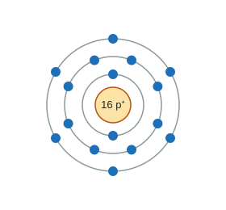

Periodesystemet
Periodesystemet er det viktigste oppslagsverket i kjemi. Du bruker det når du vil vite hvordan et atom er bygd opp, hvordan et stoff kommer til å reagere, og senere når du skal regne på laben. Når du kan lese det, slipper du å pugge mye.
Hva står i hver rute?
Hvert grunnstoff har sin egen rute. I ruten finner du vanligvis fire opplysninger. Her er ruten for natrium:
| Opplysning | Natrium | Hva det betyr |
|---|---|---|
| atomnummer | 11 | antall protoner i kjernen |
| symbol | Na | forkortelsen som brukes i formler |
| navn | natrium | |
| atommasse | 22,99 u | massen til ett atom (gjennomsnitt) |
Grupper og perioder
Grunnstoffene står i rekkefølge etter atomnummer. Tabellen er delt inn i kolonner og rader:
- Grupper er de loddrette kolonnene. I hovedgruppene (1, 2 og 13–18) har grunnstoffene i samme gruppe like mange ytterelektroner, og derfor oppfører de seg ganske likt.
- Perioder er de vannrette radene. Periodenummeret forteller hvor mange elektronskall atomet har.

Noen grupper har egne navn som du vil møte ofte:
- Gruppe 1: alkalimetaller (litium, natrium, kalium). Svært reaktive metaller. Hydrogen står i gruppe 1, men er ikke et alkalimetall.
- Gruppe 2: jordalkalimetaller (magnesium, kalsium).
- Gruppe 17: halogener (fluor, klor). Svært reaktive ikke-metaller.
- Gruppe 18: edelgasser (helium, neon, argon). Reagerer nesten ikke.
Gruppe 1 har 1 ytterelektron, og gruppe 2 har 2. For gruppe 13–18 trekker du fra 10: gruppe 17 har 7 ytterelektroner.
Eksempel
Oppgave: Bruk periodesystemet til å finne hvordan elektronene i et svovelatom (S) er fordelt i skallene.
Løsning:
- Atomnummeret er 16. Svovel har altså 16 elektroner.
- Svovel står i periode 3. Det har 3 elektronskall.
- Svovel står i gruppe 16. Det har 16 − 10 = 6 ytterelektroner.
- De to innerste skallene er fulle: 2 og 8.
- Kontroll: 2 + 8 + 6 = 16. Det stemmer med atomnummeret.
Svar: Elektronene i svovel er fordelt som 2, 8, 6.
Metaller, ikke-metaller og halvmetaller
Metallene står til venstre og i midten. De fleste grunnstoffene er metaller. De leder strøm og varme og har glans. Jern, aluminium og mangan er viktige metaller i norsk industri.
Ikke-metallene står oppe til høyre. Mange av dem er gasser, for eksempel oksygen, nitrogen og klor. Hydrogen er også et ikke-metall, selv om det står i gruppe 1.
Halvmetallene står på grensen mellom dem og har noen egenskaper fra begge. Silisium er et halvmetall. Det brukes i solceller og elektronikk og produseres ved smelteverk i Norge.
Gruppe 18 kalles edelgasser. De har fullt ytterskall og reagerer nesten ikke med andre stoffer. Derfor brukes argon som beskyttelsesgass ved sveising. Gassen holder oksygen i lufta borte fra det varme metallet.
Plasseringen forteller hvilken binding stoffene lager
Det skal du lære mer om senere. Her er en forsmak:
| Atomer som bindes sammen | Type binding | Eksempel |
|---|---|---|
| metall + ikke-metall | ionebinding | natriumklorid, NaCl |
| ikke-metall + ikke-metall | kovalent binding | vann, H2O |
| metall + metall | metallbinding | jern, Fe |
Atommasse
Atommassen er massen til ett atom, målt i u. Mange stoffer består av molekyler, det vil si atomer som er bundet sammen (mer om det på neste side). Massen til et molekyl finner du ved å legge sammen atommassene til alle atomene i det.
Løsning:
- Molekylet har 1 nitrogenatom (N) og 3 hydrogenatomer (H).
- Finn atommassene i periodesystemet: N = 14,01 u og H = 1,008 u.
- Legg sammen: \( 14{,}01 + 3 \cdot 1{,}008 = 17{,}03 \text{ u} \)
Svar: Et ammoniakkmolekyl har massen 17,03 u.
Hvorfor er ikke atommassen et helt tall? Atomer av samme grunnstoff kan ha ulikt antall nøytroner. De kalles isotoper. Klor finnes for eksempel med 18 og med 20 nøytroner, altså med massetall 35 og 37. Omtrent tre av fire kloratomer har massetall 35. Derfor blir gjennomsnittet, atommassen i periodesystemet, 35,45 u.
Atommassen i u er altså omtrent lik massetallet, men den er et gjennomsnitt og derfor sjelden et helt tall.
Atommassen trenger du igjen når du skal regne med mol og molmasse.
Test deg selv
Hvilket grunnstoff viser figuren?

- oksygen
- svovel
- klor
16 protoner gir atomnummer 16, som er svovel. 3 skall betyr periode 3, og 6 ytterelektroner betyr gruppe 16.
Hva forteller periodenummeret?
- antall elektronskall
- antall ytterelektroner
- antall nøytroner
Periode 3 betyr 3 elektronskall. Gruppen forteller antall ytterelektroner.
Magnesium står i periode 3 og gruppe 2. Hvordan er elektronene fordelt?
- 2, 2, 8
- 2, 8, 2
- 3, 2
3 skall og 2 ytterelektroner. Kontroll: 2 + 8 + 2 = 12.
Hvorfor ligner natrium og kalium hverandre kjemisk?
- De står i samme periode.
- De har samme atommasse.
- De har begge 1 ytterelektron.
De står i gruppe 1. Det er ytterelektronene som bestemmer hvordan atomet reagerer.
Hva er massen til et karbondioksidmolekyl, CO2? (C = 12,01 u, O = 16,00 u)
- 28,01 u
- 44,01 u
- 40,02 u
12,01 + 2 · 16,00 = 44,01 u
Hvorfor kan argon brukes som beskyttelsesgass ved sveising?
- Det er et metall.
- Det er en edelgass med fullt ytterskall.
- Det er brennbart.
Argon reagerer nesten ikke og holder oksygen borte fra det varme metallet.
Ordliste
| Begrep | Forklaring | Engelsk |
|---|---|---|
| periodesystemet | Tabell over alle grunnstoffene, ordnet etter atomnummer. | |
| grunnstoff | Stoff som bare består av én type atom, altså atomer med samme atomnummer. Alle grunnstoffene står i periodesystemet. | |
| gruppe | Loddrett kolonne i periodesystemet. Grunnstoffene i samme hovedgruppe har like mange ytterelektroner og ligner hverandre kjemisk. | |
| periode | Vannrett rad i periodesystemet. Nummeret er antall elektronskall. | |
| metall | Grunnstoff som leder strøm og varme og har glans. Står til venstre i periodesystemet. | |
| ikke-metall | Grunnstoff som ikke har metallegenskaper. Står oppe til høyre. | |
| halvmetall | Grunnstoff med egenskaper fra både metaller og ikke-metaller, for eksempel silisium. | |
| alkalimetaller | Grunnstoffene i gruppe 1 unntatt hydrogen. Svært reaktive metaller med 1 ytterelektron. | |
| halogener | Grunnstoffene i gruppe 17. Svært reaktive ikke-metaller med 7 ytterelektroner. | |
| edelgass | Grunnstoff i gruppe 18. Har fullt ytterskall og reagerer nesten ikke. | |
| atommasse | Massen til et atom, målt i atommasseenheten u. I periodesystemet står gjennomsnittet for grunnstoffets isotoper. | |
| isotop | Atomer av samme grunnstoff med ulikt antall nøytroner. |
Les mer
- Kjemien stemmer, kapittel 1. Oppgaver: 1.6.3 og 1.6.4.
Om kildene: Teksten, eksemplene og figurene på denne siden er laget for dette nettstedet. Siden bygger på undervisningsopplegg i kjemiprosess- og laboratoriefag ved Sauda vgs, som er utarbeidet med utgangspunkt i blant annet Kjemien stemmer, Laboranten og åpne nettkilder.